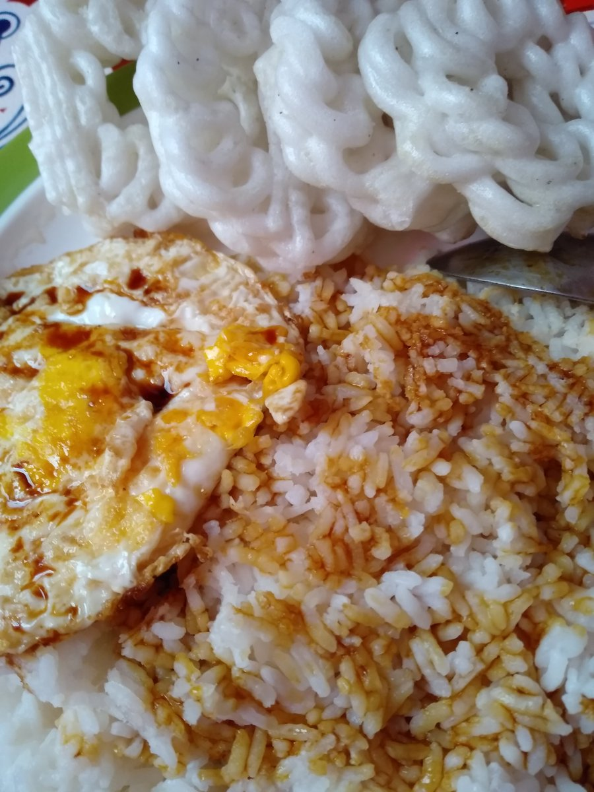

back

Ingredients
- rice grains
- Indonesian kecap (~ 3tbsp)
- egg
- Indonesian kerupul (1 pc, not to be confused with the ONE PIECE)
- salt and pepper
- green onions/scallions whatever you wanna call them
- butter
- onions and garlic
Methodology
- steam the rice until its edible
- cut up the garlic, green onions and onion
- sautee all of them with butter but maybe put the onions in first to fry the up longer
- take it all out and cook the egg however you want on the pan (but if its not sunny side up its a crime)
- in a bowl mix the rice with some kecap (season to taste) along with salt and pepper and all the veggies
- pat the rice into the bowl shape and plate it with the egg and kerupuk (add cucumber slices and onions if you want the illusion that it's healthy)